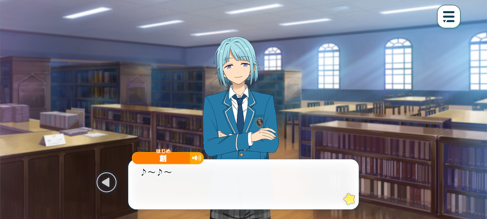
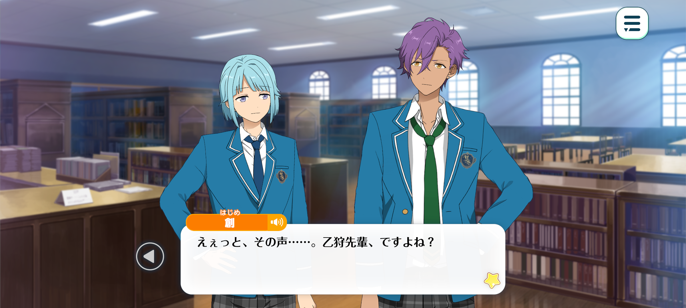
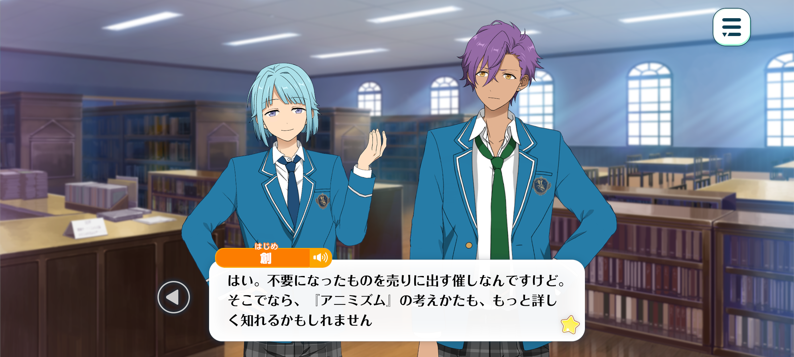

Scout! Dolly Knight
Memories Of A Doll – Chapter 1


Season: Autumn
Time: One day in early October

Hajime: ♪~♪~
Fufufu. I've got the day off today, so I think I'll use it to catch up on all the library committee work that's been piling up! ♪
Now that Aoba-senpai's graduated, it's up to me to keep the library nice and welcoming. He looked after me so much last year, so I want to do my best to repay him.
Hmm, where should I start...? It's pretty quiet today, so perhaps I'll start by putting away all the books that have been returned. It's important to put everything back where it belongs, otherwise it'll only cause trouble later, won't it~?
Oh, this one goes over there...
(Fufu. It's so quiet I could hear a pin drop. There's something rather soothing about that. I'm usually surrounded by lively people, but it's not as though I mind that!)
(Still, it's nice to have some time to yourself now and then. It gives you a chance to focus on what you're doing. If you're always thinking about everyone else, you might forget to look after yourself, too.)
...Ah! How clumsy of me. I've knocked over this whole pile of books!
I must have gotten a little too lost in thought. I hope the books are alright...
Phew! They don't seem to have been damaged.
I'll just dust them off and put them back where they belong. Mmm…
Hmm... I shouldn't have tried to take the easy way out. I thought I could reach it if I stood on my tippy toes and stretched ju~ust a little further. Perhaps I should've brought a step stool after all.
Hm? Why am I floating...?
E-Eh? Someone's lifting me up?!
U-Um... who are you~? You gave me quite a fright, picking me up so suddenly!

Adonis: Can you reach now, Shino?
Hajime: U-Um... That voice! Is that you, Otogari-senpai?
Adonis: Indeed. I happened to notice you.
I considered fetching a step stool, but you only needed a little more height, so I thought I'd simply lift you up.
Hajime: I’m sorry! Thank you for going to the trouble!
You really saved me there. Some of the shelves are so high that I sometimes struggle to reach them.
I knocked over a whole pile of books just now, too. Perhaps I've been working a little but too much lately…
Adonis: Fufu. I get like that too. The more time I spend working, the more life here at Yumenosaki begins to feel fresh and new.
However, you are rather light, Shino. You should eat more meat and put on some weight.
Hajime: Ahaha! That's just because you're incredibly strong, Otogari-senpai~! I might look like this, but I've built up a little muscle myself, you know! ♪
Really, though, thank you so much for helping me. B-But... could you put me down now...?
Adonis: Ah. Of course. My apologies.
By the way, since we're here, I wanted to borrow a book. As you're on the library committee, would you mind helping me find it?
Hajime: Of course! I'd be more than happy to help.
What sort of book are you looking for? If you know the title or author's name, I should be able to find it straight away.
Adonis: To tell you the truth, I'm looking for a book about animism.
Hajime: Animism...? That's quite the complex subject.
It's a traditional belief, isn't it? The idea that everything, including people and things, has a soul. I've studied a little Japanese history, so I've come across it before.
Adonis: Precisely. We studied it in class as well.
When I first came to Japan, I struggled quite a bit with the language so I did not understand much. But after spending time studying it, my interest in the subject has grown again.
I've been living here for some time now, but I've noticed that people here seem to treat everything with such care and consideration. Kanzaki and Oogami in particular are very mindful of these things.
That's what made me curious. I wanted to learn more about animism, and I thought the library would be the best place to start.
Hajime: I see... Now that you mention it, I suppose that would explain why we're so careful with our belongings.
Though perhaps that's just how I am. I grew up having to make do with very little, so I treasured everything I had. The other children in my neighbourhood would sometimes give me their old teddy bears and dolls, and I'd give them names and play with them.
Adonis: Fufu. That's very sweet.
Hajime: You think so? I was actually surprised to find out that not everyone did that...
Ah! I had a look on the computer, but this is the only book I could find.
Hmm... It seems to be quite a specialised book, written by experts. I'm not sure it's the sort of introductory book you were hoping for, Otogari-senpai. Would you still like to borrow it?
Adonis: Please, do not worry about me. I will do my best to read it, even if my Japanese is still rather poor.
Hajime: Are you sure...? Since you went to the trouble of coming all the way to the library, I'd really like you to find something that's a little easier to read...
Oh! I've just had an idea. Otogari-senpai, there's something I'd like to suggest!
There's a flea market held regularly at a park near ES. Would you like to come with me sometime?
Adonis: A flea... market...?

Hajime: That's right! It's a place where people can sell things they no longer need. I thought it might be a good opportunity for you to learn more about animism.
When I moved into the dorms, I packed up all the things I didn't need anymore into boxes.
If we set up a stall together and passed on some of the things we've treasured, perhaps you'd get a better idea of the care people put into the things they own...
...Or something like that! Maybe I'm getting a little ahead of myself?
Adonis: I apologise. You've gone to all this trouble because I couldn't find a suitable book to borrow.
Thank you, Shino. Then, let us experience a flea market for ourselves.
Could you send me your schedule again?
Hajime: Of course!
I'm sorry I couldn't be of more help as a member of the library committee. Let's make sure we go together! ♪